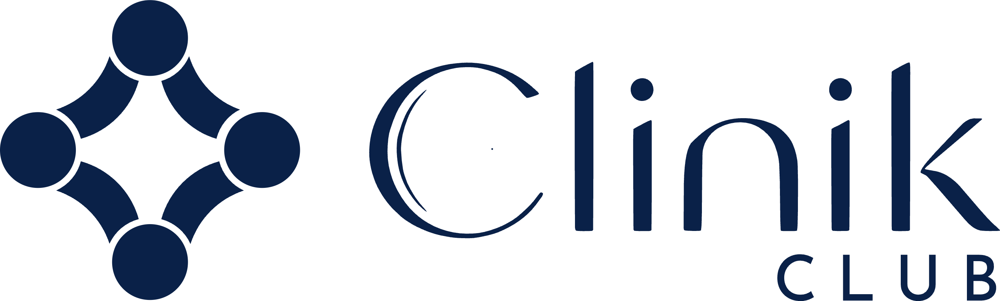

Diretrizes de identidade visual e verbal. Este documento define como a marca Clinik Club — plataforma de gestão para clínicas — se apresenta, com consistência, elegância e cuidado.
Excelência em cada gestão.
O Clinik Club é uma plataforma de gestão para clínicas — CRM, agenda, marketing e relacionamento com pacientes em um só lugar. A identidade traduz esse posicionamento em formas serenas, geometria precisa e um azul profundo institucional.
O símbolo nasce de quatro figuras humanas — cabeça e corpo em arco — dispostas em um losango. Elas se voltam umas às outras, formando no vazio central uma estrela de quatro pontas: o encontro entre clínica, equipe e paciente que a plataforma organiza.
Assinatura principal
A assinatura principal combina o símbolo, o lettering exclusivo "Clinik" e o complemento "CLUB" em caixa-alta espaçada. As proporções e alinhamentos são fixos e não devem ser recompostos.
O lettering é um desenho tipográfico exclusivo — de alto contraste, com terminais afiados — e deve ser reproduzido sempre a partir dos arquivos oficiais, nunca redigitado.

Positivo, negativo e símbolo
Prefira sempre a versão positiva. A negativa é usada quando o fundo é o Azul Clinik ou fotografia escura. O símbolo isolado só substitui a assinatura quando a marca já está identificada no contexto.
Respiro obrigatório
A área de proteção equivale a metade da altura do símbolo (x/2) em todos os lados. Nenhum elemento gráfico, texto ou margem de corte pode invadir esse espaço.
Tamanhos mínimos
Abaixo do tamanho mínimo, o lettering perde definição. Em digital, a assinatura nunca deve ter menos de 70 px de largura; em impressos, 20 mm. Abaixo disso, use apenas o símbolo.
Paleta institucional
RGB 10 · 33 · 72
CMYK 86 · 54 · 0 · 72
Pantone 282 C (ref.)
RGB 92 · 110 · 148
RGB 227 · 232 · 241
RGB 245 · 244 · 241
O Azul Clinik é a cor da marca — use-o com generosidade em capas e peças institucionais. Os tons de apoio criam camadas e fundos; nunca introduza cores fora da paleta.
Três vozes tipográficas
AaBbCc 0123456789
AaBbCc 0123456789 — Rótulos em caixa-alta espaçada
O símbolo como textura
Ampliado e recortado, o símbolo vira um padrão gráfico exclusivo — usado tom sobre tom em capas, cartões e fundos de peças institucionais.
Regras: sempre tom sobre tom (nunca em cor de contraste), sempre sangrando a borda da peça, e nunca competindo com a assinatura.
Sereno, preciso, acolhedor
Confiança sem arrogância. Afirmamos qualidade com sobriedade, nunca com superlativos vazios.
Linguagem simples e humana. Falamos com pessoas, não com "pacientes-alvo". Sem jargão médico desnecessário.
Frases curtas, informação exata. Cada palavra tem função — como cada elemento da identidade.
"Sua consulta está confirmada para quinta, às 9h. Estamos à sua espera."
"ATENÇÃO!!! Agendamento confirmado com SUCESSO! Não perca — a MELHOR clínica da região espera por você!!"
O que nunca fazer
Padrão para o aplicativo
Elementos de UI construídos com a mesma paleta e tipografia da marca — para manter o produto Clinik Club consistente entre telas e times.
Todo componente com superfície — botões, campos, cartões — usa o mesmo raio assimétrico do símbolo: 20px em dois cantos opostos, 4px nos outros dois. É a curva do losango aplicada à interface.
Hover, foco e toques — a resposta imediata da interface.
Toda animação tem função — orientar, confirmar ou guiar. O losango pulsante é a única animação de espera da marca.
A marca em uso
12
340